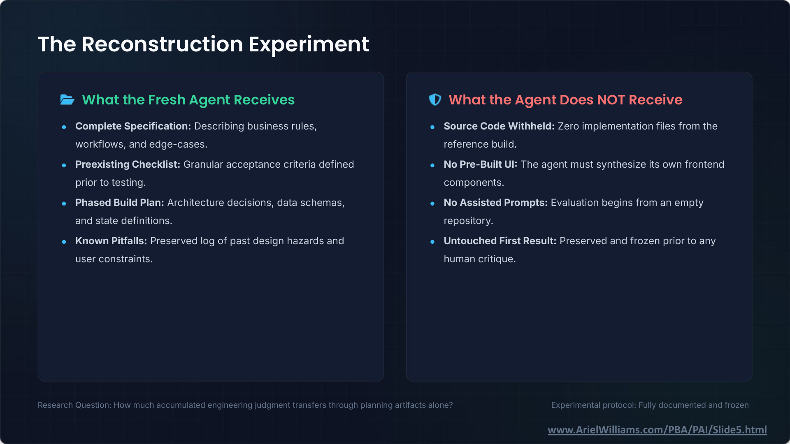

It Works: Agentic Coding and Legal Technology · Slide 5 of 12
The Reconstruction Experiment
Slide snapshot captured · Ariel Williams


Text transcript
What the Fresh Agent Receives
- Complete Specification: Describing business rules, workflows, and edge-cases.
- Preexisting Checklist: Granular acceptance criteria defined prior to testing.
- Phased Build Plan: Architecture decisions, data schemas, and state definitions.
- Known Pitfalls: Preserved log of past design hazards and user constraints.
What the Agent Does NOT Receive
- Source Code Withheld: Zero implementation files from the reference build.
- No Pre-Built UI: The agent must synthesize its own frontend components.
- No Assisted Prompts: Evaluation begins from an empty repository.
- Untouched First Result: Preserved and frozen prior to any human critique.
Research Question: How much accumulated engineering judgment transfers through planning artifacts alone?
Experimental protocol: Fully documented and frozen
Slide footer: www.ArielWilliams.com/PBA/PAI/Slide5.html